DREAM Technical Report 精读：把 Agent 变成工业推荐的元控制面
《DREAM Technical Report》来自淘宝天猫集团 DREAM Team，公开于 2026 年 8 月 10 日。它讨论的不是让大模型直接生成商品，也不是用一个 Agent 替掉召回、精排和重排，而是在现有级联链路上增加一层可感知、可编排、可审计、可回退的策略控制面。论文入口为 arXiv:2608.09408。本轮未在已核验来源中发现独立开源代码或项目页；稿件自称技术报告，不据此推断任何正式会议录用状态。
工业级推荐的召回、精排与重排虽稳定高效，却把用户信号、业务目标和执行反馈切散在不同模块：系统难以感知会话内从浏览、比较到购买的实时迁移，也缺少一个能统一感知意图、跨模块编排策略并从线上结果自我校准的控制面。
1. 背景和问题
1.1 级联推荐稳定，但控制逻辑是碎的
大规模推荐系统把复杂问题拆成召回、精排、重排与服务层，原因很现实：每一层有清晰的延迟预算、候选规模和失败隔离边界，任何新模块都可以逐步放量。然而这种模块化也形成四个长期瓶颈。第一是信息碎片化：上游召回只看到适合自己的用户和物品表示，下游发生的曝光、点击、交易与体验结果难以回到同一语义空间。第二是目标散落：CTR、IPV、CVR、GMV、广告价值与用户体验分别由不同模型或规则优化，冲突时依赖人工调权。第三是策略刚性：人群包、固定阈值和运营规则可以审计，却不能及时追踪一个用户在同一次会话中从漫游、比较到临近购买的状态变化。第四是弱实时意图：序列模型能够隐式编码兴趣，却通常不给出可供多个下游共同消费的“需求是什么、决策到了哪一步、证据有多强”的结构化答案。
已有 Agentic RecSys 分别尝试物品选择、用户模拟、对话推荐和系统编排，但 DREAM 认为这些路线仍缺一条端到端闭环：物品选择 Agent 有记忆和工具，却往往看不到端侧微行为与全局业务状态；系统编排 Agent 可以改架构或调策略，却未必接受实时用户意图；单体 Agent 把多目标压进一次生成，缺少显式仲裁和参数边界；即便做了 A/B 判断，结果也常服务于下一轮架构实验，而不是回写到当前用户层面的感知与决策。论文要补的不是一个更大的推荐模型，而是位于各模型之上的控制平面。
1.2 DREAM 的任务边界
DREAM 把职责分成三段。Intent Engine 负责把多源行为变成 L0 稳定画像、L1 当前需求和 L2 细粒度偏好；Meta Engine 负责决定何时值得调用 LLM、当前应偏向什么目标、哪些语义动作可执行；Unified Outlet 则把语义动作编译为召回、精排和重排已有接口能接受的局部参数。这样一来，大模型不需要承担毫秒级主链的全部稳定性，也不拥有任意修改生产配置的权限。它给出的是受枚举约束的策略 bundle，真正的参数翻译、校验和回退由确定性工具完成。
这项工作值得关注，正因为它同时公开了“Agent 如何接生产链”和“生产链如何限制 Agent”。但证据边界也要先钉住：线上结果来自淘宝首页 Guess You Like；作者只披露相对 lift，明确省略绝对 control/treatment 值；报告未给出实验时长、流量规模、置信区间或显著性检验；具体白名单、阈值、流量上限和部分业务策略因商业原因没有完全展开。因此后文只解释公开架构、公式与相对结果，不把它扩写成可直接复制的内部策略手册。
从研究问题看，DREAM 实际同时接受三项约束。首先是语义统一性：意图必须跨召回、交互和策略调整复用，但生产意图又不能退化成一个不可解释的稠密向量。其次是时效与成本：端侧信号最接近决策变化，却受耗电、带宽和隐私约束；云端大模型理解力更强，却不能处理每个事件。最后是控制可逆性：跨目标策略只有真正进入排序链才有价值，但任何一次错误推理都不能污染全局配置或让主链失去默认行为。论文后续的分层意图、端云漏斗、调用频控和局部覆盖，分别对应这三项约束，而不是彼此独立的技巧集合。
这也解释了为什么“实时意图”在本文里不等于“最近一次点击”。系统需要同时保留多个并行需求，并区分稳定画像、需求品类、细粒度偏好和决策阶段；同一行为只有和历史意图、会话顺序及负反馈一起解释，才可能决定应该新增、更新、合并还是终止某个意图。若这一层发生过度收敛，Meta Engine 会在错误目标上做更精确的控制；若这一层过度发散，下游则会面对相互冲突的策略。因此 Intent Engine 的质量、调用预算和回退机制必须和线上收益一起评估。
2. 方法
2.1 总体控制面：感知、决策、执行与双环反馈
DREAM 是覆盖在原生产链上的 overlay。用户端信号、会话行为与实时上下文先经过 Intent Engine，输出 L0/L1/L2；MetaModel 随后按 M1→M2→M3 分层处理：M1 汇总意图并确定策略方向，M2 结合 Strategy Memory 规划抽象语义动作，M3 通过 Tool Process 将动作翻译为具体参数。Unified Outlet 把结果以“默认配置 + 个性化局部覆盖”形式送入 Home Feed 等场景，参数范围、白名单与放量限制构成安全边界。核心设计不是让 LLM 接管排序，而是让它在被压缩、可验证的动作空间内协调原有模型。
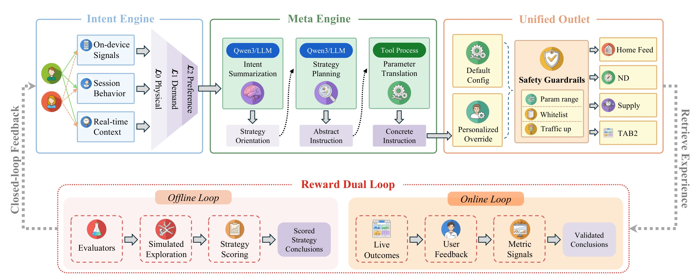
Figure 2 要沿信息流阅读。上半部分从 Intent Engine 的感知进入 Meta Engine，再以具体指令抵达 Unified Outlet；下半部分并不是同一条训练环，而是 Reward Dual Loop 的两类证据。离线环用 Evaluator 与模拟探索形成“有评分的策略结论”，线上环用真实结果、用户反馈和指标信号形成“已验证结论”。左侧 Closed-loop Feedback 把执行结果送回感知校准，右侧 Retrieve Experience 把经验送回策略规划。默认配置始终与 personalized override 并存，因此策略层失效时主链仍可运行。图中的结构同时说明 DREAM 的贡献与限制：LLM 有跨模块视野，却只能通过统一出口触碰已批准的控制面。
2.2 Intent Engine：端云流量漏斗与分层意图维护
Intent Engine 的第一难题不是建模，而是信号经济学。淘宝端侧会产生曝光、点击、收藏、加购、购买、退款、停留、滚动、缩放与反复查看等高频事件；全部上传并调用云端 LLM 不可行，过度过滤又会丢掉跨域和跨会话证据。DREAM 因此设计 F1-F4 严格级联：F1 在端侧把 tracking point 编码为统一行为特征；F2 用单层 GRU 在 7 维离散特征流上检测意图变化，并以规则树作不可服务时的 fallback，生产中约 15% 行为通过该门；F3 最多打包 50 个事件，只上传 ID 编码的最小行为包；F4 在云端恢复 item、shop、category 等语义并做第二次准入。论文摘要给出的端云触发链最终上报量约为 8.7%，这不是模型准确率，而是成本控制结果。
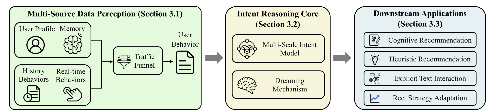
Figure 3 把 Intent Engine 压缩成一条完整接口链：多源感知层先接收画像、记忆、历史/实时行为并经 Traffic Funnel 筛选，推理核再用 Multi-Scale Intent Model 处理当下增量，由 Dreaming 整合跨日状态，最后把结构化意图交给四类下游消费者。它不展开 F1-F4 的每个盒子，却明确了模块边界：流量漏斗只决定哪些证据值得上云，推理核只产生意图，业务端再决定如何消费。因此 L0/L1/L2 不是三个独立模型，而是同一个分层接口：L0 保存较稳定的人口属性、长期兴趣和行为记忆；L1 表达需求品类、场景、认知阶段与置信度；L2 表达子品类、品牌/价格/属性偏好、决策阶段和实时心理。
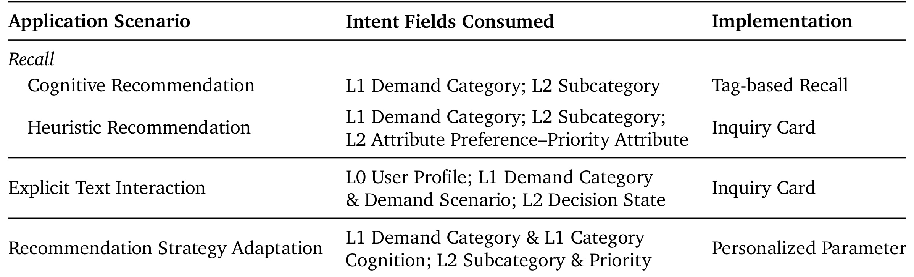
Table 5 进一步限定了“解耦”的具体含义。认知推荐召回使用 L1 需求类目和 L2 子类目；启发式卡片再消费属性偏好及其优先级；显式文案组合 L0 画像、L1 需求类目/场景与 L2 决策状态；只有 Recommendation Strategy Adaptation 将品类认知、子品类和优先级转为个性化参数。表中的字段映射是接口契约，不是证明效果的实验；它也说明下游并不读取整张意图卡，而是只取已登记的字段。在线主代理只做增量维护，其状态转移写成：
符号解释：$P_{L0}$ 是稳定画像，$\mathcal I_{t-1}$ 是上一时刻的活动意图列表，$B_t$ 是当前行为包；$\Delta\mathcal I_t$ 只含 insert/update，$r_t$ 决定是否异步升级以及交给 context subagent 还是 expert。0.8B Main Agent 在同步路径立即返回，不等待 4B 专家；规则层根据行为数和 L1 类目数触发，模型层再用 escalation confidence 补充判断，生产中约 6.3% 请求进入异步层。context subagent 处理需求结构和跨会话上下文不确定，expert 处理品类已定但品牌、价格、属性和决策状态仍模糊的情况。
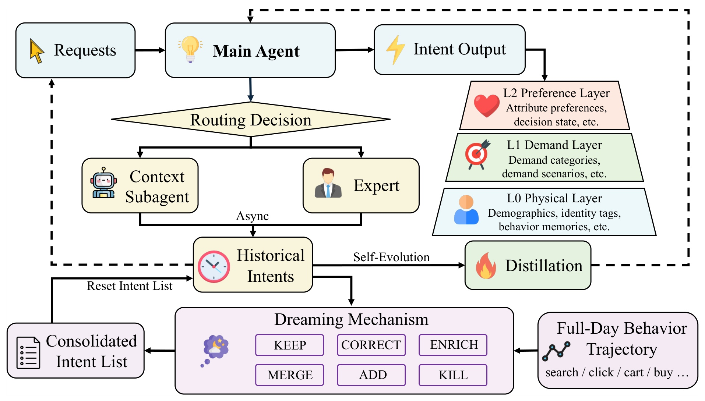
Figure 5 展示了两种“学习”不能混为一谈。交互层面，异步专家结果先回写 Historical Intents，使下一次请求受益；模型层面，这些结果再用于 on-policy distillation。Main Agent 先生成自己的前缀，4B 专家在相同学生前缀上提供 token 分布，训练目标为：
符号解释：$x_t=(P_{L0},\mathcal I_{t-1},B_t)$；$p_\theta$ 是 0.8B 主代理分布，$p_\phi$ 是被路由到的 4B 专家，$\hat y_t$ 来自主代理自身轨迹。反向 KL 在真实推理会遇到的学生状态上对齐专家，而不是只在教师生成序列上蒸馏；该目标监督意图更新序列，不监督路由决策本身。风险是错误路由或专家偏差会沿状态回写和蒸馏两条路传播，所以论文另设字段级置信阈值与“近期可靠行为优先”的冲突规则。日内在线包仍可能造成同义意图膨胀、证据不足时误判和弱信号遗漏，Dreaming 因而利用夜间低负载 GPU，以完整日轨迹替换短触发窗口：
符号解释：$\mathcal I_D$ 是第 $D$ 日最后一次在线请求后的完整意图列表，$B_D$ 是按时间排序的全天行为，输出成为次日第一请求的初始列表。与在线路径只允许 insert/update 不同，Dreaming 可以 keep、correct、enrich、merge、add、kill，并依据行为强度、收敛度、时效性和未满足程度重排优先级。它把负反馈约束在有证据支持的属性级，避免一次退款或放弃被放大成整个品类的永久排斥。
2.3 Meta Engine：触发预算、策略契约与安全编译
Meta Engine 先解决“何时调用”再解决“调用后做什么”。相邻行为下意图往往稳定，每次事件都刷新 LLM 既浪费算力，也会增加状态抖动。论文将动作 $a_{u,t}\in\{0,1\}$ 定义为刷新或复用缓存，公开目标是在最大化预期刷新价值 $a_{u,t}\Delta_{u,t}$ 的同时，扣除调用成本 $\lambda_c a_{u,t}C^{\mathrm{llm}}_{u,t}$ 和延迟 $\lambda_l a_{u,t}L^{\mathrm{llm}}_{u,t}$，每个用户组与时间桶另受调用预算约束。因为线上拿不到真实 $\Delta$，系统用行为分布漂移、意图变化、活跃度和时间因素形成 $S_{u,t}$，再经单调校准近似刷新价值。容量影子价格 $\mu_{g,b}$ 进入判断后，只有 $\widehat\Delta_{u,t}$ 不小于成本、延迟与容量价格之和才刷新；该单调决策等价为上下文相关阈值，高峰或低价值组可提高阈值，重要场景或高价值组可降低阈值。真正部署时还要乘 eligibility mask：
符号解释：$\theta_{u,t}$ 由全局基准加用户组、时间、场景和日级漂移修正后裁剪到安全区间；$m_{u,t}$ 额外执行冷却时间、单用户上限、场景 allowlist 和过载保护。阈值决定“值不值得”，mask 决定“允不允许”，二者缺一不可。
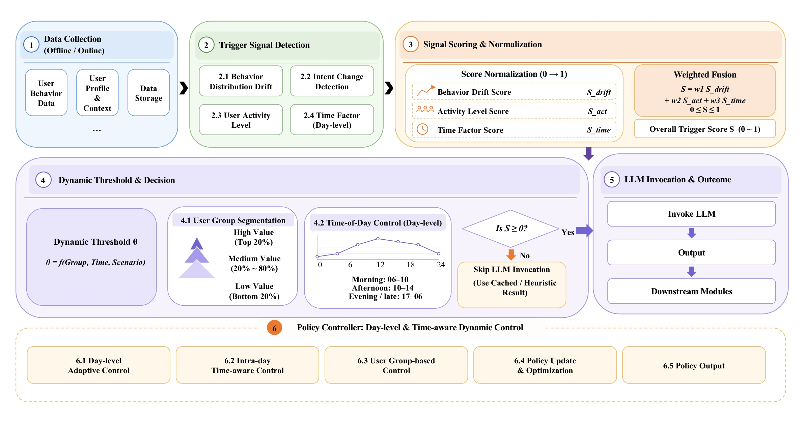
Figure 6 从左到右对应上述部署链：原始行为和画像进入四类信号，经过归一化与加权融合得到 $S$；动态阈值再结合用户分层和日内时段做 invoke/skip；跳过时明确使用缓存或启发式结果，而不是返回空值；底部 policy controller 负责日级、日内和人群级更新。图中 0.45、0.60、0.75 只是框架说明中的阈值示例，不能当作对外可复用的生产配置。真正策略和容量价格并未完整披露。调用发生后，MetaModel 先输出 M1 总体判断，再输出固定 schema 的 M2 语义动作；M3 不由 LLM 自由生成，而由确定性 translator 编译，请求时每个阶段的配置是：
符号解释：$a_u$ 是缓存的用户语义策略，$p_s^0$ 是阶段 $s$ 的生产默认参数，$T_s$ 是确定性翻译器，$\oplus$ 表示局部覆盖而非替换完整配置，$\mathrm{Guard}_s$ 依次执行 JSON、schema、版本、allowlist 和范围检查。bundle 缺失、过期、畸形或翻译失败时，该阶段保持 $p_s^0$。
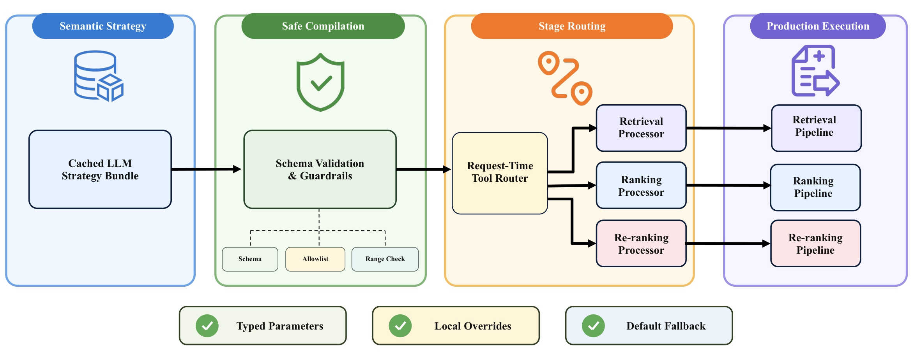
Figure 7 的关键是“语义共享、参数局部”。同一个 category preference 可以在召回中保护配额、在精排中改变类目打散窗口、在重排中调整列表组成，但三个 processor 不共享同一个底层参数。近线 LLM 把策略 bundle 写入缓存，延迟敏感请求只做读取、校验、路由和确定性翻译。Typed Parameters、Local Overrides、Default Fallback 三个底部框给出了可审计性来源：输入类型固定、影响范围局部、失败结果确定。这也意味着某一阶段的翻译失败只会让该阶段回到默认参数，不会要求其他阶段一起接受一个未校验的全局配置。图中的红箭头是新增控制路径，黑色主链仍是生产保底。
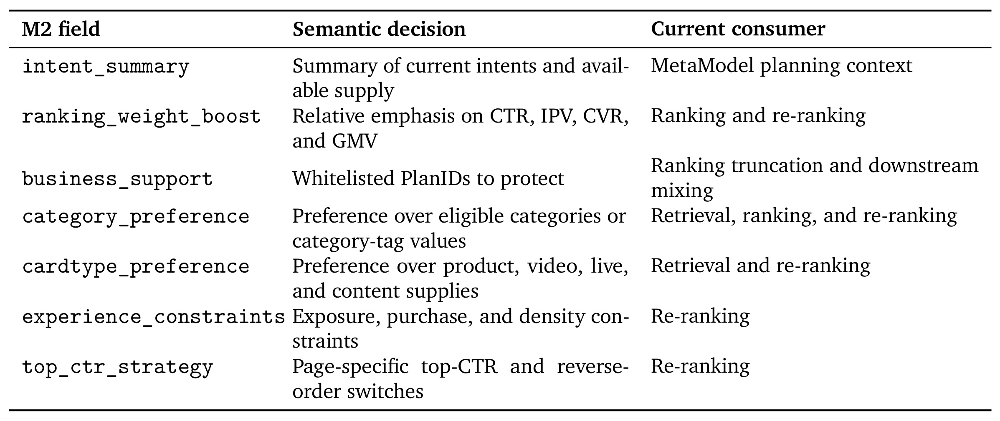
Table 6 展开 M2 的公开契约：intent_summary 只服务规划上下文；ranking_weight_boost 协调 CTR/IPV/CVR/GMV 并被精排、重排消费；business_support 只保护白名单 PlanID；category_preference 跨三阶段，cardtype_preference 进入召回和重排；曝光、购买和密度约束以及页级 top-CTR 开关只作用于重排。表格也暴露一个重要边界：这些字段是“当前 consumer”，并非每个语义等级都已有生产算子。例如召回对 video=-2 有硬抑制实现，其他内容等级在没有白名单 operator 时可以是 no-op。精排不重写原 LTR，而是在原分 $f_{\mathrm{ltr}}$ 上乘入 $\prod_i(1+\delta_i\widehat v_i)$；$\widehat v_i$ 是生产校准后的 CTR、IPV、CVR 或 GMV 预测，$\delta_i=w_i^0b_i$，其中 $w_i^0$ 为配置基权重，$b_i\in\{-2,-1,0,1,2\}$ 是有限语义等级。该设计保留原模型主干，再按当前意图调整多目标权重；若预测未校准或乘法项共同放大，风险会累积，所以等级、范围和业务支持数量都必须被 guardrail 截断。附录 Table 10 说明控制面比 Table 6 更宽，但仍是有限集合：召回可开关 BE 链并重配 plan/category quota；blending 可调自然融合、global-push alpha、Extreme-CTR 与 PVR 权重；boosting 只注入指定 item/plan 的加权分；experience 层控制类目打散、满意/不喜欢过滤、疲劳衰减、向量或规则打散；重排只可注入已存在 Generator。M2 每次稀疏选择一部分，M3 才映射到安全范围。由此不能把 DREAM 描述成“LLM 任意操作生产系统”，更不能从表名反推出未公开的具体参数取值。
2.4 Reward Dual Loop：生产链回放、二元奖励与上线门槛
离线环不是在模拟器里生成用户长期轨迹，而是拿真实线上请求日志，分别调用当前生产链的 baseline treatment 和 strategy treatment。两次调用都可能遇到当时的在线特征和模型状态，因此同一记录重复 $K$ 次，并对生产列表级 Evaluator 分数取均值。探索列表只返回训练环境，不写曝光、归因或业务计数；训练和 serving 共用 schema、translator、range check 与 fallback，以减少“训练时合法、上线时不可执行”的落差。
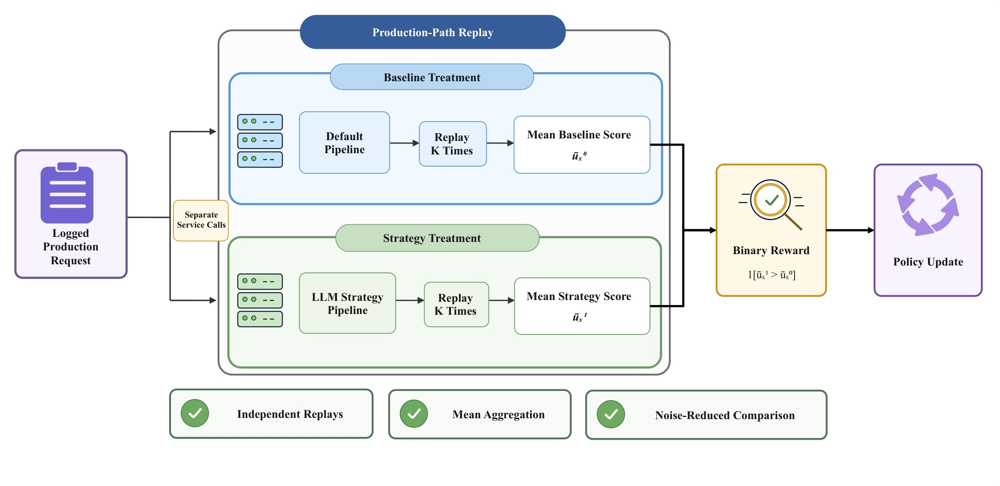
Figure 8 强调 baseline 与 strategy 是分开的服务调用，并非共享完全相同的瞬时状态。Independent Replays 与 Mean Aggregation 只能降低噪声，不能把回放变成历史服务状态的精确重建。比较的是两组均值，奖励刻意设为二元胜负：
符号解释：$x$ 是日志请求，$a_x$ 是 MetaModel 生成且经生产 translator 执行的策略，$\bar u_x^1$ 和 $\bar u_x^0$ 分别为 strategy 与 baseline 重复回放后的平均 Evaluator 分。分差保留作诊断，但训练奖励本身不混合 rank、lift、teacher 或 curriculum 项。策略目标是在回放日志 $x\sim\mathcal D$ 与策略 $a_x\sim\pi_\theta(\cdot\mid x)$ 上最大化二元奖励的期望；$\mathcal D$ 是回放日志集，$\pi_\theta$ 是 MetaModel policy。优化只提高可执行且在列表级代理指标上胜过默认链的 bundle 概率，不等价于直接优化延迟点击和交易。进入线上前还要检查 win rate、均值分差、策略合法率、Tool Process 成功率、fallback 率及各意图分群回归；真正用户与业务影响仍由守护式放量和随机 A/B 决定。
3. 实验结果
3.1 Intent Engine 的离线与配对评估
Multi-Scale Intent Model 使用两套基于后续行为的协议。LLM-as-a-Judge 把预测字段与评估窗中的后续曝光、搜索、点击共同交给 judge；证据不足的样本被排除。Search-Behavior Recall 则取推断后的第一次搜索会话，分别衡量意图与搜索词的语义一致性、细粒度偏好对筛选条件的召回。两者都比人工静态标签更接近“预测未来行为”，但也依赖后续行为选择和 LLM 语义判定。
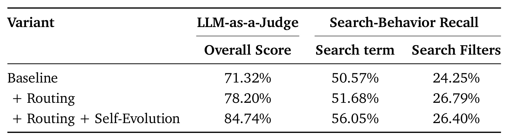
Table 2 显示 baseline 的 overall score 为 71.32%，加入 routing 后为 78.20%，再加入 self-evolution 后到 84.74%，对应两段绝对提升 6.88 和 6.54 个百分点。搜索词召回从 50.57% 依次到 51.68% 和 56.05%，说明蒸馏与状态回写对后续需求语义更有帮助。搜索筛选召回则从 24.25% 升至 26.79% 后回落到 26.40%；它仍比 baseline 高 2.15 个百分点，却不能据此宣称所有细粒度字段都随 self-evolution 单调变好。
Dreaming 使用 683 名匹配用户，将日内最终意图列表与整日整合后的列表，用同一份次日行为证据配对评估。这一设计控制了用户间行为差异，检验的是“换成更长时间窗后，同一个人的意图字段是否更一致”，不是线上业务 A/B。
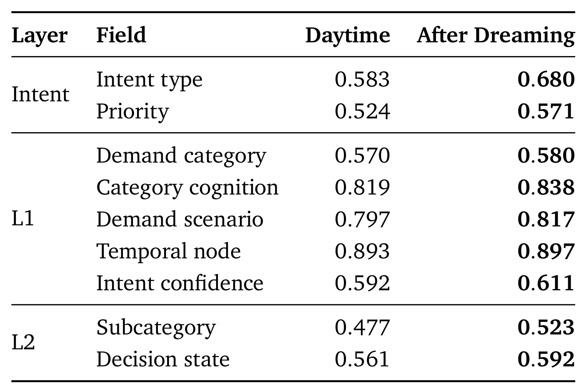
Table 4 的九个字段均提高，但幅度不同。Intent Type 从 0.583 到 0.680，Priority 从 0.524 到 0.571，Subcategory 从 0.477 到 0.523，支持 Dreaming 在去重、纠错与补遗漏上的目标；Temporal node 仅从 0.893 到 0.897，Demand category 从 0.570 到 0.580，说明白天已经可靠的字段可提升空间有限。报告没有给出字段置信区间，因此这些分数适合证明方向一致性，不足以比较极小差值的统计稳定性。表中 Daytime 和 After Dreaming 使用同一组用户和次日证据，所以差值可归因于同一用户内的列表替换；但 683 人的覆盖面、抽样周期和显著性均未披露，不应外推为全站长期效果。
3.2 淘宝首页 Meta Engine 累积式线上 A/B
主线上实验位于 Taobao Homepage Guess You Like。baseline 为既有生产链，两组 treatment 使用同一 Intent Engine、MetaModel、参数翻译与护栏：第一组只开放重排控制，第二组在此基础上增加精排控制，所以是累积式 stage ablation。所有数值都是 $\Delta M=(M_{treatment}/M_{baseline}-1)\times100\%$；绝对分母未披露。
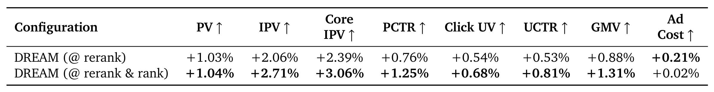
只控制 rerank 时，PV +1.03%、IPV +2.06%、Core IPV +2.39%、PCTR +0.76%、Click UV +0.54%、UCTR +0.53%、GMV +0.88%、Ad Cost +0.21%。扩展到 rerank & rank 后，IPV、Core IPV、GMV 分别变为 +2.71%、+3.06%、+1.31%，相对前一组再增加 0.65、0.67、0.43 个百分点；PCTR 到 +1.25%。PV 几乎不变（+1.03% 对 +1.04%），较合理的读法是更深控制主要改善既有曝光的参与和转化，而不是通过增加曝光量取得结果。Ad Cost 从 +0.21% 变为 +0.02%，也提醒各商业指标并非随控制面扩张同步放大。报告没有实验时长、样本量和显著性，不能把相对 lift 进一步换算成绝对商业规模。
3.3 Intent Engine 下游线上验证
论文还将意图字段分别接入认知推荐召回、启发式 Inquiry Card、显式文案交互和推荐策略调整。这里必须区分 platform-wide 与 in-scenario 两种分母：前者在全推荐流上看影响，后者只看启发式推荐场景内的卡片曝光和点击。
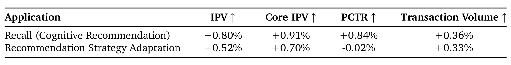
Table 8 中，Cognitive Recommendation 的 intent-driven recall 带来 IPV +0.80%、Core IPV +0.91%、PCTR +0.84%、交易量 +0.36%。Recommendation Strategy Adaptation 带来 IPV +0.52%、Core IPV +0.70%、交易量 +0.33%，但 PCTR 是 -0.02%。作者将其解释为点击率近中性、转化深度改善；更保守的表述应是 PCTR 略负，是否可视为中性取决于未披露的不确定性。该表证明不同意图消费方式可以在全站口径产生可见变化，却不能证明每个目标同时受益。两行的“Application”是两种独立接入方式，不是递进式 treatment，也不能相加成联合收益。
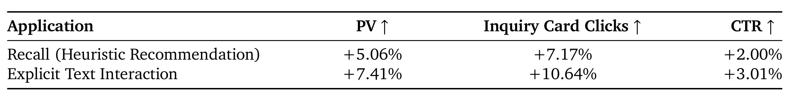
Table 9 进一步拆开 Inquiry Card 的“选什么需求”和“如何表达需求”。引入意图召回后，场景内 PV +5.06%、卡片点击 +7.17%、CTR +2.00%；用 L0/L1/L2 生成个性化文案后，PV +7.41%、卡片点击 +10.64%、CTR +3.01%。这些较大的百分比以局部场景为分母，不能与 Table 8 的平台级 lift 横向比较，也不能替代 GMV 或长期满意度指标。它更像链路诊断：结构化意图既影响需求卡候选，也影响用户看见的语言表达。两行也不能被解读为同一实验的先后阶段：Recall 更换卡片需求来源，Explicit Text Interaction 更换面向用户的表达。报告未披露叠加两者的联合组，因此不应直接假设收益可线性叠加。
3.4 生产请求案例：从并行意图卡到有界参数
案例保留一个匿名请求的 14 个活动意图，并展示其中 P5、P4、P3、P2 卡。Intent Engine 没有把需求压成一个标签：鞋、帽/眼镜、手表、男装等可以并存，每张卡分别携带 priority、decision state、需求语义、置信度和 L2 属性。MetaModel 接收完整卡集后才判断主次，将运动/休闲鞋视为 competitor selection / comparison indecision，并把帽子、手表、男装等作为次级需求；“dominant/secondary”属于 MetaModel 判断，不是 Intent Engine 原始字段。
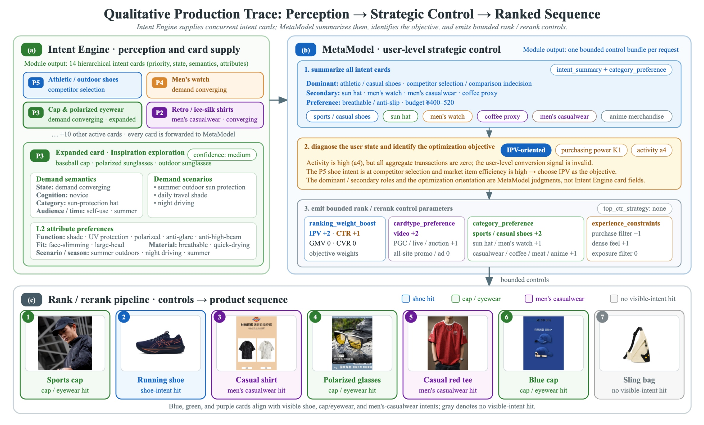
Figure 9 的第二步结合购买力 K1、活跃度 a4 与市场效率。由于用户级聚合交易计数为零，conversion 信号被视为无效；P5 鞋意图处于比较阶段且市场 item efficiency 较高，因此选 IPV-oriented。输出 bundle 只启用稀疏、有界动作：IPV +2、CTR +1，GMV/CVR 为 0，video +2，部分卡型和类目 +1/+2，并对 purchase filter 与 dense feel 作有限调整。第三步才由 rank/rerank 执行。商品框颜色表示与可见意图的语义对齐，不是某个控制参数的因果归因；单案例也不能证明指标提升，只能验证字段归属、编译结果和可审计链路确实能连起来。特别是图中的 +2/+1 为这个请求的语义等级，不是未披露的生产绝对权重。
3.5 4B replay-RL 的离线结果与证据边界
附录用相同 held-out 请求、prompt、typed schema、validator、compiler、执行引擎与 Evaluator 比较 4B Base 和 RL，因而试图隔离 replay RL 的作用。这里的 pCTR、pCVR、pIPV、pGMV 是点式代理诊断，Valid 是 bundle 通过 schema 并编译成可执行策略的比例。
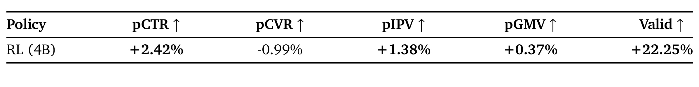
Table 11 报告 pCTR +2.42%、pIPV +1.38%、pGMV +0.37%，但 pCVR -0.99%，说明代理目标并非全面改善。Valid 相对提升 22.25%，绝对值从 80.86% 到 98.85%，即增加 17.99 个百分点；这项结果与 production-path replay 共用编译器的设计高度一致，也可能是最直接的工程收益。不过 replay 的两种 treatment 是独立服务调用，均值不能消除全部时变噪声；Evaluator 只评估即时列表质量，不合成延迟点击、交易和状态转移。因此 Table 11 支撑“策略更可执行、若干代理指标改善”，不支撑“离线 RL 已证明线上收益”。表中全部数字都是相对 Base 的离线 lift，不是淘宝用户 A/B 的实测增量。
4. 总结
4.1 我的判断
DREAM 最有价值的不是把 LLM 接进推荐，而是把控制权拆成语义规划、确定性编译和生产执行三个层次。Intent Engine 给多个下游共享同一份可解释意图；Meta Engine 通过调用预算避免无效推理；M2 枚举动作和 M3 工具翻译缩小输出空间；默认配置、局部覆盖、白名单、范围检查和 fallback 将新失败面限制在请求与处理器内部；离线 production-path replay 先提高策略可执行性，线上随机 A/B 再验证用户与业务影响。对工业推荐而言，这比“让 Agent 直接排序”更接近可落地路径。
实验链也相对完整：Table 2/4 检查感知模块，Table 11 检查离线 policy，Table 7 检查 Meta Engine 的阶段扩张，Table 8/9 检查意图下游，Figure 9 串起一个请求。但它仍是一份公司技术报告，核心结论应写成“淘宝首页的公开相对结果支持该架构可行”，而不是“Agentic RecSys 已普遍优于传统推荐”。
4.2 工程启发与复现检查
若把思路迁移到别的推荐系统，第一步应复现接口而不是模型：先定义 L0/L1/L2 的可空字段、增量更新和置信规则，再给每个下游明确允许消费的字段。第二步是建立 deterministic translator 和 default-plus-override，使任何 LLM 输出都不能越过 schema、allowlist、范围、版本与流量门。第三步才是选择主代理、专家和蒸馏方式，并把调用率、缓存命中、fallback、合法率、端侧耗电与上报量列为一等指标。离线评估应同时报告均值分差、胜率、策略有效性和分群退化；线上 treatment 要区分控制面扩张的累积设计与真正正交消融。
4.3 局限、风险与后续跟进
主要局限至少有五项：
- 外推范围有限。 核心 A/B 来自淘宝首页 feed，跨国家、低频业务、搜索、广告或内容平台是否成立未知。
- 统计信息不完整。 只有相对 lift，没有绝对基线、样本量、周期、置信区间和显著性，无法判断小幅差值的稳定性。
- 代理评估偏差。 意图模型依赖 LLM-as-a-Judge 和后续行为筛选；离线 RL 依赖即时列表 Evaluator，且 pCVR 仍下降 0.99%。
- 隐私与端侧治理。 停留、滚动、缩放、跨域行为和长期记忆会扩大数据最小化、授权、漂移、功耗与删除权问题。
- 新控制面就是新攻击面。 缓存污染、过期 bundle、策略记忆偏差、prompt 注入、错误路由和多个安全算子组合都可能造成系统性影响，不能只靠单个范围检查。
后续最值得跟进三件事。其一，等待更完整版本披露 A/B 周期、流量、显著性、成本与调用率分桶，判断 8.7% 上报、6.3% 异步升级和业务 lift 之间的真实成本曲线。其二，复现实验时单独研究 Intent Engine 的校准、空值率、并行意图稳定性和跨日 kill/merge 错误，而不是只追 overall judge score。其三，审计 Reward Dual Loop：检查 Evaluator 与线上指标的相关性、Strategy Memory 的过期与负经验使用、pCVR 退化来源，以及 fallback 是否在高负载或分布突变时仍保持默认链行为。只有这些条件被共同验证，DREAM 的“元控制面”才可能从一份成功的淘宝案例变成可迁移的工程范式。